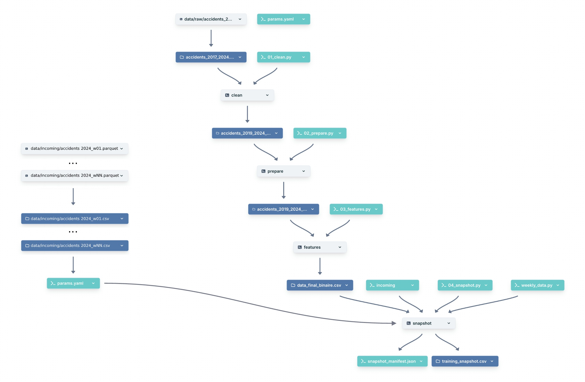

Fichier métier
accidents_2024_wNN.parquet
lot hebdomadaire déterministe
Le lot est versionné avant le training ; Git porte le pointeur et DagsHub conserve le contenu.
lot hebdomadaire déterministe
empreinte et adresse du contenu
donnée récupérable depuis un autre poste
relie le run aux données réellement lues
